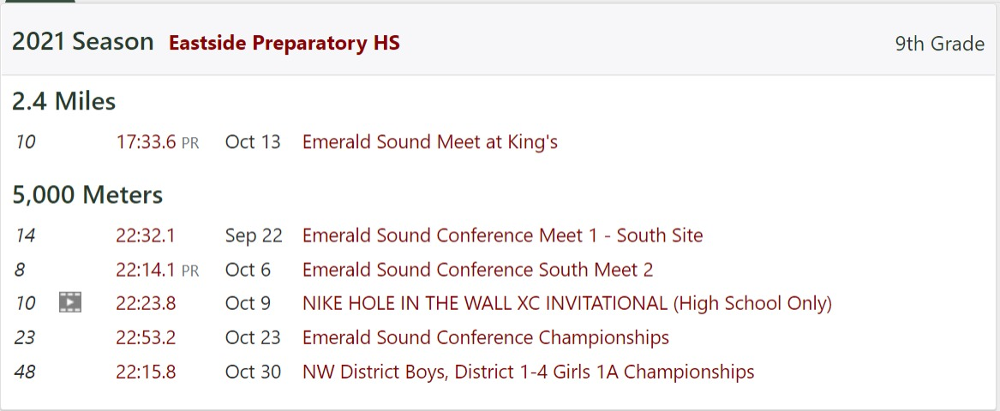

My genius:
Personal records and times throughout the cross country season:
Throughout the cross country season, i obviously had many competitions (meets) and so I had many times to PR (personal record). However, it is not the norm that you PR every meet, considering in cross country the trail/place you are running on varies so certain trails can be more difficult than others, leading you to not do better than last time every meet. However, when the trails get harder for you, they get harder for your opponents too, so usually they will also get slower.
Below is a picture I have on my times during meets for a 5k.

 If you are interested in taking a look at my times directly, take a look at my profile on this website.
If you are interested in taking a look at my times directly, take a look at my profile on this website.